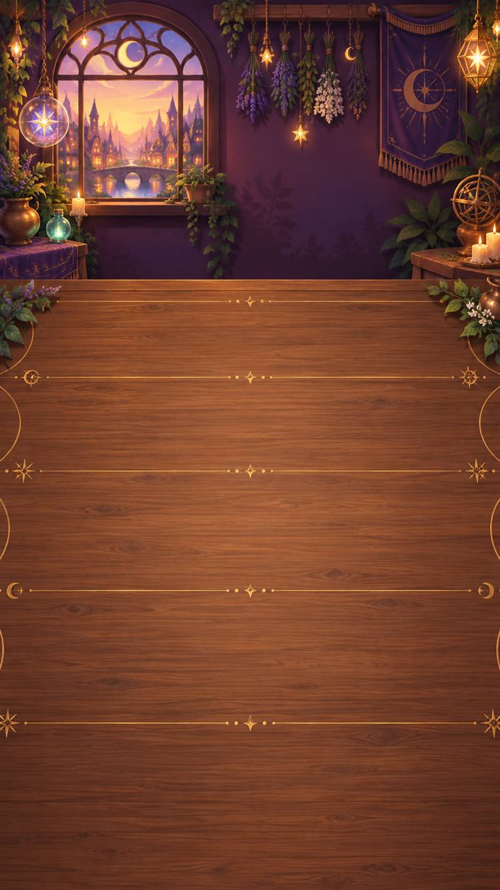
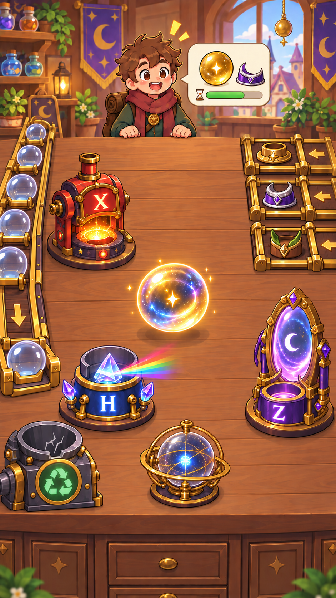

接下客人的订单
读懂目标，从一颗初始量子球开始。
微信小游戏 · 量子计算 × 魔法经营
接一张订单，调一颗魔法球。
在小店里，发现量子的奇妙。
无需下载 App · 小程序码待接入

你的第一张订单，正在等你。

界面概念图使用项目原有美术素材 · 界面概念图，实际画面以游戏版本为准
开店之前
傍晚，窗边的星灯亮了。柜台上摆着空白的订单，几台奇妙的装置正等着开工。
你要做的第一件事，是为客人调制一颗魔法球。先观察它，再选择量子门：有的操作翻转状态，有的创造叠加，还有的把变化藏在相位里。
“别急着交付。看看这颗球，现在变成什么样了？”
网站情境引入 · 根据游戏的商店与订单玩法编写一间小店，一点量子
客人带着不同的要求来访。你需要观察量子球的状态，选择合适的量子门，
调制出符合订单的魔法球，再交到客人手里。
读懂目标，从一颗初始量子球开始。
组合 X、H、Z 等操作，观察状态变化。
检查结果，交付魔法球，迎接下一位客人。
女巫的量子门图鉴
每次点击都会作用于当前状态。也可以重置，再试一条新线路。
交换两个基态的振幅；在布洛赫球上，对应绕 X 轴旋转半圈。
从 |0⟩ 出发：X → |1⟩。再用一次 X，回到 |0⟩。
向量 (0, 0, 1)
球的颜色与纹理是教学示意。颜色随计算基测量概率变化，纹理区分相对相位；布洛赫球上的箭头表示状态，不是球在空间里的运动方向。
试试 H → Z → H：Z 之后概率不变，但向量和纹理变了。最后一次 H 会得到什么？
从一张订单开始，慢慢认识量子世界。
小程序码待接入